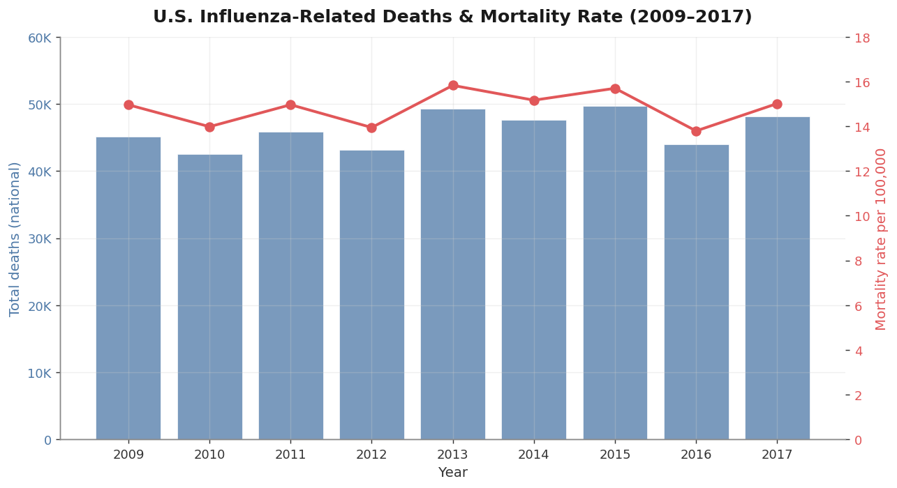
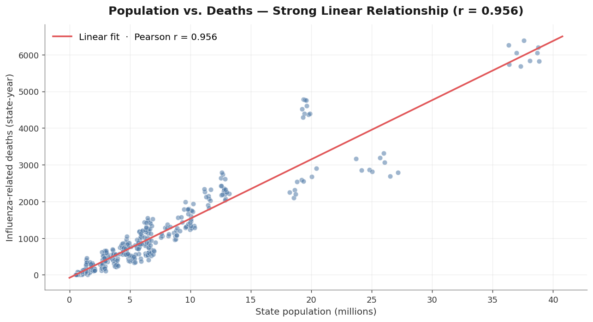
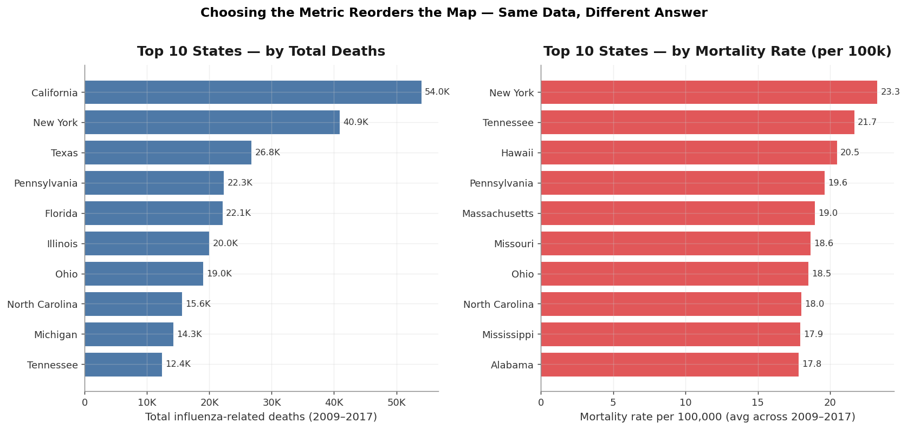
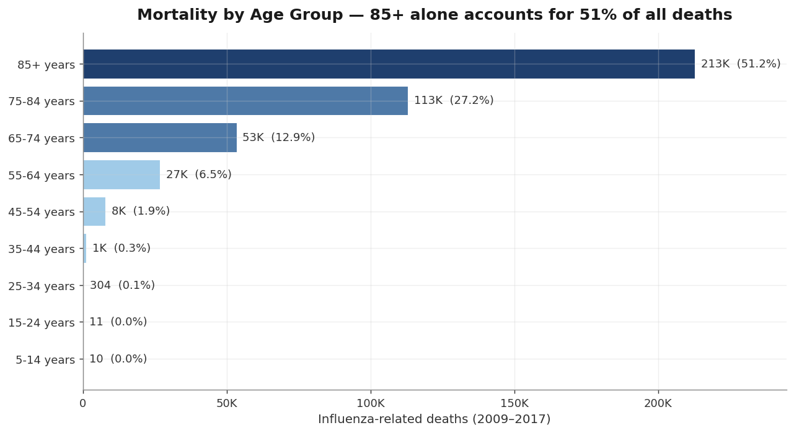

Datensätze: CDC-Influenza-Sterbedaten nach Bundesstaat · Monat · Altersgruppe (2009–2017, 66 Tsd. Zeilen), CDC-ILI-Arztbesuche (24,9 Tsd. Zeilen), CDC-Labortests nach Stamm (14,1 Tsd. Zeilen), NIS-Impfumfrage für Kinder (28,5 Tsd. Zeilen), U.S.-Census-Bevölkerungsschätzungen pro Bundesstaat
Ergebnis: Integrierter Bundesstaat-Jahr-Datensatz und dreischichtiges Tableau-Dashboard (Choroplethenkarte + Bevölkerungssymbole + Pro-Kopf-Rate als Overlay) zur Unterstützung des medizinischen Personaleinsatzes über die US-Bundesstaaten.
Projektüberblick
Die Aufgabenstellung war operativ, nicht akademisch: Vorbereitung auf die Grippesaison — richtiges Personal, am richtigen Ort, zur richtigen Zeit. Anhand von Trends nach Bundesstaat und Demografie soll geplant werden, wann und in welcher Stärke medizinisches Personal über die US-Bundesstaaten eingesetzt wird.
Die analytische Schwierigkeit liegt in der Wahl der richtigen Kennzahl. Rohzahlen folgen fast vollständig der Einwohnerzahl — sie beantworten also die falsche Frage ("wo leben die meisten Menschen") statt der richtigen ("wo ist das Pro-Kopf-Risiko am höchsten"). Die Fallstudie zeigt diese Wahl und quantifiziert die daraus folgende Neuordnung der Prioritätsstaaten.
Geschäftsfragen: (1) Welche Bundesstaaten weisen nach Bevölkerungsbereinigung die höchste Influenza-Belastung auf? (2) Hat sich die nationale Sterblichkeit zwischen 2009 und 2017 statistisch signifikant verändert? (3) Welche Altersgruppen sollten bei Impf- und Aufklärungsprogrammen Priorität haben?
Daten-Pipeline
| Schritt | Tool | Aktion |
|---|---|---|
| 01 | Excel | CDC-Influenza-Sterbedaten geladen (66.097 Zeilen · Bundesstaat × Jahr × Monat × Altersgruppe, 2009–2017). "Suppressed"-Zellen entsprechend der CDC-Vertraulichkeitsregel markiert. |
| 02 | Excel · Pivot | CDC-Tabelle bereinigt: "Not Stated" → "Unknown" standardisiert, Eindeutigkeit auf (State Code, Jahr, Monat, Altersgruppe) geprüft, Suppressed-Flags beibehalten statt zu imputieren. |
| 03 | Excel | U.S.-Census-Bevölkerungsschätzungen bereinigt (28.986 County-Jahr-Zeilen) und auf Bundesstaat × Jahr aggregiert. |
| 04 | Excel · INDEX/VERGLEICH | Zusammengesetzten Schlüssel State|Year gebildet und beide Tabellen zu einem Master-Datensatz auf Bundesstaat-Jahr-Ebene mit Population, Todesfällen und berechneter Sterblichkeitsrate verknüpft. |
| 05 | Python · NumPy | Statistische Validierung: Pearson-Korrelation zwischen Bevölkerung und Todesfällen auf Bundesstaat-Jahr-Ebene; Vergleich der Sterblichkeitsrate über die Jahre. |
| 06 | Tableau | Dreischichtiges Dashboard gebaut: Choropleth (Rohzahlen) + Bevölkerungssymbole + Symbolfarbe = Sterblichkeitsrate pro 100.000. |
| 07 | Tableau Story | Erzählerisches Dashboard, das die beiden Karten so verbindet, dass die Personaleinsatzentscheidung sichtbar von der Kennzahlwahl abhängt. |
Zeitlicher Verlauf (2009–2017)
Influenza ist ein wiederkehrendes Problem stabiler Größenordnung, kein sich verschärfendes. Die nationalen Todesfälle lagen über die neun Jahre in einer engen Spanne von 42K–50K; die bevölkerungsbereinigte Rate schwankte zwischen 13,8 und 15,8 pro 100.000 (Durchschnitt 14,8 pro 100k ≈ 0,015 %).

Key Insight — Stabile Rate, wachsende Bevölkerung
Die reinen Sterbezahlen wirken volatil (2015 ≈ 50K, 2010 ≈ 43K). Nach Division durch die Bevölkerung bleibt die Rate in einem engen Band von 14–16 pro 100k. Die scheinbaren Schwankungen sind weitgehend demografisch, nicht epidemiologisch.
Bevölkerung steuert die Rohzahlen
Über alle 458 Bundesstaat-Jahr-Beobachtungen sind Bevölkerung und Influenza-Todesfälle eng verknüpft — Pearson r = 0,956. Genau das macht Rohzahlen für einen Vergleich zwischen Bundesstaaten unbrauchbar: bei dieser Stärke sagt "größter Bundesstaat" fast mechanisch "die meisten Todesfälle" voraus. Die eigentliche Frage — "wo ist das Pro-Kopf-Risiko am höchsten?" — verlangt einen anderen Nenner.

Wähle die Kennzahl, ändere die Antwort
Die Wahl der Kennzahl ändert die Rangliste nicht um ein paar Plätze — sie ordnet sie komplett neu. Fünf der Top-10 nach Rohzahl fallen aus den Top-10 nach Rate heraus, und fünf bevölkerungsschwächere Bundesstaaten (Hawaii, Massachusetts, Missouri, Mississippi, Alabama) rücken nach oben.

Key Insight — Personal folgt der Rate, nicht der Zahl
Plant man nach Rohzahlen, schickt man Personal dorthin, wo die meisten Menschen ohnehin leben. Plant man nach Rate, schützt man die Bevölkerungen mit dem tatsächlich höchsten Pro-Kopf-Risiko — und das ist eine grundlegend andere Liste von Bundesstaaten.
Räumliche Verteilung — das Tableau-Dashboard
Die dreischichtige Tableau-Karte zeigt beide Kennzahlen gleichzeitig: blaue Flächenfärbung = Gesamttodesfälle, Kreisgröße = Bevölkerung, Kreisfarbe (weiß → rot) = Sterblichkeitsrate pro 100k. Ein Jahresfilter erlaubt es Stakeholdern, durch 2009–2017 zu blättern.

Demografisches Muster
Influenza-Sterblichkeit ist überwältigend ein Problem der älteren Bevölkerung. Personen ab 85 Jahren allein machen 51 % aller Todesfälle aus; die Gruppe 75+ zusammen 78 %; die Gruppe 65+ zusammen 91 %. Sterblichkeit unter 55 Jahren ist vernachlässigbar.

Key Insight — Impf-Priorisierung ist klar
Es geht hier nicht um eine Verteilung über Altersgruppen, sondern um eine Gruppe. Impfkampagnen, Vorrat an antiviralen Medikamenten und vorab-saisonale Personalplanung für Pflegeeinrichtungen sollten den operativen Schwerpunkt bilden. Das Altersssignal ist deutlich stärker als das geografische Signal.
Wichtigste Erkenntnisse
Erkenntnis 1 — Die nationale Sterblichkeitsrate war praktisch konstant.
2009–2017 lag die Rate im Band 13,8–15,8 pro 100k (≈0,015 %). Scheinbare Schwankungen der Todesfälle sind hauptsächlich demografisch, nicht epidemiologisch. Kein statistisch signifikanter Trend.
Erkenntnis 2 — Bevölkerung korreliert fast perfekt mit Rohzahlen (r = 0,956).
Das macht Rohzahlen als Vergleichsmaß zwischen Bundesstaaten praktisch wertlos. Jede Aussage zu "am stärksten betroffenen Bundesstaaten" auf Basis von Rohzahlen reproduziert im Wesentlichen die Bevölkerungsrangliste.
Erkenntnis 3 — Die Sterblichkeitsrate ordnet die Prioritätskarte komplett neu.
Der Wechsel der Kennzahl bringt Hawaii, Massachusetts, Missouri, Mississippi und Alabama in die Top 10 und drängt Kalifornien, Texas, Florida, Illinois und Michigan heraus. Nur New York, Pennsylvania, Ohio und North Carolina überstehen beide Listen. Personalentscheidungen sollten sich an der ratenbasierten Liste orientieren.
Erkenntnis 4 — Impf-Priorisierung ist altersbasiert.
Die Gruppe 85+ macht 51 % aller Influenza-Todesfälle aus; die Gruppe 75+ 78 %; die Gruppe 65+ 91 %. Aufklärung und Vorräte sollten entsprechend auf Pflegeeinrichtungen gewichtet werden.